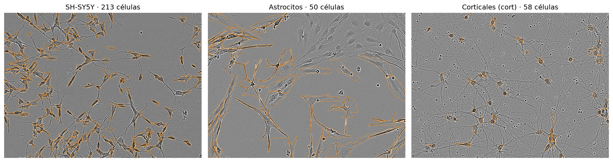

Segmentación de células y clasificación de hojas de vida#
Proyecto integrador de Deep Learning · Universidad del Norte · Noviembre de 2026
Autores: Anyely Sanjuan Benavides y Juan David Díaz Fernández · Profesor: Dr. Lihki Rubio


Figura 1 Una imagen de entrenamiento por tipo celular con el contorno de cada célula anotada. Microscopía de contraste de fase del conjunto Sartorius - Cell Instance Segmentation [Sartorius, 2021]; figura elaborada por los autores.#
Descripción del proyecto#
En este libro estudiamos dos problemas con un mismo protocolo experimental: la segmentación de instancias de neuronas en microscopía de contraste de fase y la clasificación de hojas de vida en 24 categorías profesionales. El primero proviene de la competencia Sartorius - Cell Instance Segmentation [Sartorius, 2021], con tres tipos celulares (SH-SY5Y, astrocitos y neuronas corticales) y máscaras en codificación RLE. El segundo proviene de la competencia Jarvis Calling Hiring Contest [Kaggle, n.d.], un contexto de selección de personal en el que el análisis de equidad forma parte de la evaluación.
Congelamos el protocolo antes de entrenar: hipótesis con criterio de refutación numérico, métrica primaria por dominio, particiones agrupadas sin fuga de información, semillas, presupuesto de cómputo y plan estadístico. Auditamos los datos antes de modelar. Comparamos modelos propios y de referencia con varias semillas, intervalos de confianza bootstrap y pruebas pareadas con corrección de Holm. Medimos la contribución de cada decisión de diseño con ablaciones, y evaluamos robustez, calibración, incertidumbre, explicabilidad, eficiencia y equidad. Por último, empaquetamos el mejor modelo de cada dominio en una API con pruebas automáticas, contenedor y un experimento de detección de deriva.
En segmentación comparamos una U-Net++ propia con watershed, una variante tipo Hover-Net, Mask R-CNN, Cellpose (cero-shot y ajustado), SAM y un baseline clásico de Otsu con watershed. En texto comparamos un clasificador de clase mayoritaria, TF-IDF con regresión logística, NB-SVM, TF-IDF con XGBoost, FastText, una CNN-1D, una BiLSTM con embeddings Word2Vec y DistilBERT.
Resumen de resultados#
En segmentación, el mejor AP@[0.5:0.95] en test (93 imágenes) es el de Cellpose ajustado, 0.253 (IC 95 %: 0.226 a 0.281). El tipo celular más difícil para Cellpose ajustado son los astrocitos, con AP 0.117. Hipótesis pre-registradas de segmentación: H1 refutada, H2 no refutada, H3 no refutada.
En texto, el mejor F1 macro en test (373 currículos, 24 clases) es el de DistilBERT, 0.774 ± 0.012 entre semillas; la regla de servicio pre-registrada pone en producción DistilBERT (0.774). Hipótesis de texto: H4 refutada, H5 no refutada. Al borrar del currículo el nombre de su categoría, la F1 macro de DistilBERT cae 0.604, y al cambiar el género gramatical la predicción cambia en el 0.0 % de los currículos. Con esa evidencia concluimos que el clasificador puede sugerir una categoría a una persona que decide, pero no debe filtrar candidatos de forma automática.
Contenido#
Planteamiento
Bloque 1: segmentación de instancias celulares
Bloque 2: clasificación de texto
- Análisis exploratorio y auditoría de las hojas de vida
- Preprocesamiento y representaciones de texto
- Modelos de clasificación de texto y búsqueda de hiperparámetros
- Resultados de clasificación de texto
- Calibración, robustez, equidad y explicabilidad del clasificador de texto
- Eficiencia, riesgo en reclutamiento y análisis crítico del clasificador de texto
Uso de inteligencia artificial#
Para elaborar este trabajo usamos herramientas de inteligencia artificial (Claude, de Anthropic) como apoyo en la programación, el análisis de datos y la redacción. Los autores revisamos, verificamos y aprobamos todo el contenido, y asumimos la responsabilidad por él. El capítulo Reproducibilidad, autoría y uso de herramientas detalla el alcance de ese apoyo.
Referencia#
Rubio, L. (2026). Deep Learning. Capítulo 4: Recurrent Neural Networks [Notas del curso]. Universidad del Norte.